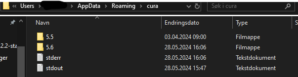

Her kan du laste ned set med cura print profiler til skaperverkstedets 3D-printere.
Cura 4.7 Cura 5.4 Cura 5.5 Cura 5.6For å bruke dem start med å laste ned og installere Cura
Så søker du etter '%appdata%' og åpner den mappa.

Gå så inn i mappen med navnet 'cura'. Inne i cura mappa skal det være mapper til hver av cura versjonene du har installert, i dette tilfelle er versjon 5.5 og 5.6 installert.
Pakk ut zip filen du lastet ned i sted (knappene ovenfor) og bytt ut mappen med samme versjon.
Eksempel: Skulle jeg brukt cura versjon 5.5 ville jeg slettet mappen med navn '5.5', for og så flytte mappen jeg lastet ned og pakket ut inn i cura mappa.
NB: Sørg for at Cura er lukket imens du sletter og bytter på filenen!
Når du har gjort dette kan du starte cura og velge en av printerne fra listen.